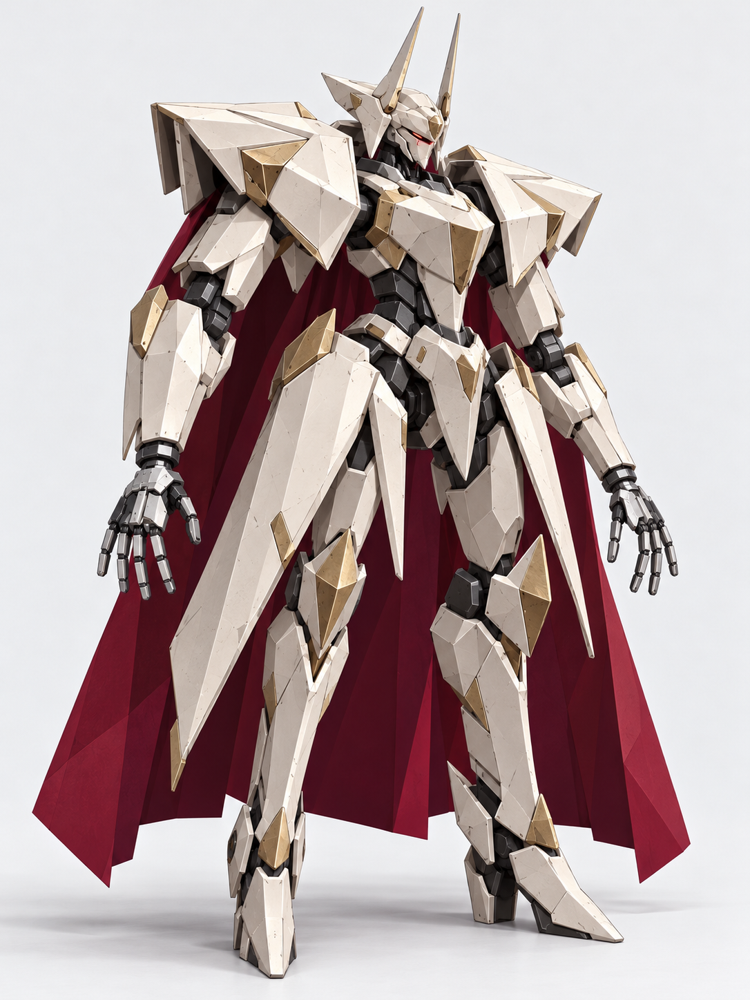

A
Ivory Paladin


Design intent. Translate the reference's elegant knight silhouette into a few large armor shapes.
Agent review. The closest direction to the supplied knight illustration: tall crests, long tassets and a broad burgundy cape. Broad faceted plates pick up ivory and brass highlights. Both slim hands retain the H01 silver-over-gunmetal structure and five separate digits.
v002a · Ready for owner review
Saved generation prompt
Knight illustration for armor direction; shared H01 master for both hands.
Use case: stylized-concept. Asset type: one original full-body low-poly knight mech concept for Version 2 of Animal Mech Lab. Input roles: Image 1 is the user's knight mech illustration, used for knightly armor language, elegant proportions, visor helmet, broad pauldrons, chest plate, fauld/tassets and pointed greaves. Invent a NEW mech; do not reproduce the exact illustration, symbols, writing, weapon, shield or ornaments. Image 2 is H01, the SHARED MECHANICAL HAND MASTER. Every mech in this series uses this SAME mirrored pair of thin silver-over-gunmetal hands, the same palm shape, same finger link design, same wrist collar, same proportions, same materials. Match these hands closely and scale them as a practical small mech component; armor design may vary but HAND DESIGN MUST NOT VARY. Primary request: an original knight-like industrial combat mech in the spirit of Armored Core, expressed as a deliberately simple PlayStation-era low-poly 3D game model. Strong unique silhouette from a few broad armor forms. A mechanical pilotable chassis, compact sensor visor, armored torso, narrow articulated waist, two arms and two legs. Knight influence is built into functional armor shapes, not a human wearing a metal costume. Shared H01 hands, CRITICAL: both hands visible, empty, slim and delicate compared with the forearm armor. Same compact gunmetal palm, shallow angular satin-silver back plate, short narrow polygonal wrist collar, long thin angular finger struts, silver dorsal strips, dark joint gaps. EXACTLY FIVE INDIVIDUAL DIGITS on EACH hand: FOUR separate fingers (index, middle, ring, little) in a row plus ONE distinct opposable side thumb. Four long fingertips plus one side thumb, ten total across both hands. Three simple links per finger. No bulky fingers, mitts, pincers, oversized palm blocks, claws, three-finger grippers or differently colored hands. Fingers are narrow, about one fifth of the palm width, gently spread so all four long fingers and thumb are readable. Whole hand including palm and fingers is roughly the length of the helmet, and much narrower than the gauntlet. Hands should feel like the user's AC6 reference rather than the oversized block hands of an old toy robot. Geometry and materials: VERY low-poly main geometry, a small number of broad flat polygon faces on each armor plate, flat-sided wedges and prisms, visibly faceted four/six-sided hinge joints, angular silhouettes, minimal bevels. Enrich MATERIALS without increasing geometric detail: satin/brushed steel, slightly reflective painted metal, restrained brass/silver trims where specified, broad specular reflections that reveal flat faces, very subtle low-resolution surface grain or light edge wear. Keep large clean areas. No dense panel lines, etched scrollwork, tiny decals, miniature fittings, exposed wires, complex pistons, round high-poly surfaces, photorealistic greebles, triangulated texture overlay, voxel construction or glossy plastic. Metallic faces can reflect light while the geometry stays crude and faceted. Presentation: ONE complete mech, front three-quarter view at about 20 degrees, standing upright with a little grounded weight, neutral lighting, arms slightly away from torso and both empty hands fully visible against the backdrop, backs of hands/palms angled enough to count all five separate digits. All head crests, armor, hands and feet inside frame with comfortable margins. Plain near-white studio background, soft floor contact shadow only. Portrait around 3:4, high clarity at hand scale. No weapons, shields, held objects or large equipment hiding hands. No labels, diagram, insets, text, religious emblems, logos or watermark. A — IVORY PALADIN. A tall elegant knight mech with a small closed visor helmet and two slim straight crest prongs, broad flared triangular pauldrons, a sharply tapered breastplate and narrow black articulated waist. Two long flat tapered hip tassets frame slim powerful legs with pointed knee guards and elongated faceted greaves. Two simple burgundy cape panels hang BEHIND the torso and legs, kept apart from hands and feet, made from only a few broad flat planes with no intricate cloth folds. Ivory slightly reflective painted armor, exposed satin steel at joints and bevel planes, a few broad warm-brass trim blocks, burgundy cape interior. Do not copy the reference's crosses, numbers, line decoration or exact head. Keep machinery visible at waist and elbows. Slim shared H01 hands in their unchanging silver and gunmetal.